Kameyama, Mie: things to do, food and stays
Kameyama · Mie
Kameyama
Highlighted on the Mie map.

Stay
ホテルルートイン亀山インター
Hotel Route Inn Kameyama Inta
Hotel in Taokatera, Kameyama with parking.
カンデオホテルズ亀山（CANDEO HOTELS）
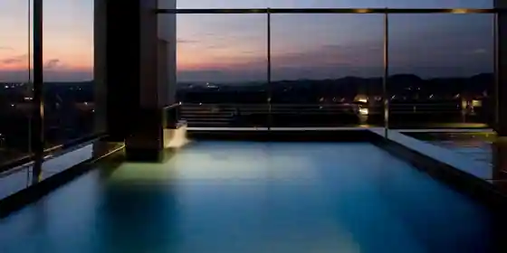
Kandeo Hotels Kameyama (CANDEO HOTELS)
Hotel in Ono, Kameyama with open-air baths and scenic views; 2-minute drive from Kameyama IC.
ホテルルートイン第2亀山インター
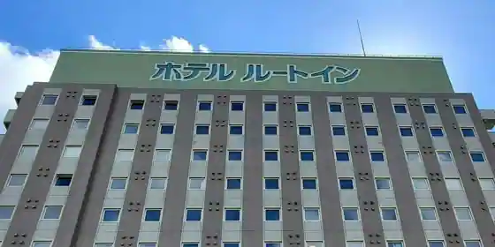
Hotel Route Inn Dai 2 Kameyama Inta
Hotel in Taokatera, Kameyama with a large communal bath; 2-minute drive from Kameyama IC.
ホテル亀山ヒルズ
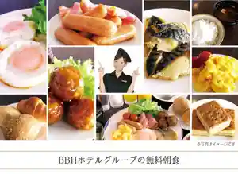
Hotel Kameyama Hiruzu
Hotel in Tomisachi, Kameyama; 7-minute walk from Jrkameyama Station.
ホテルエコノ亀山

Hotel Ekono Kameyama
Hotel in Tomisachi, Kameyama with breakfast available and parking.
アパホテル〈三重亀山〉
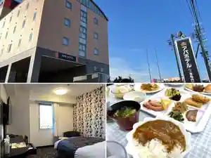
APA Hotel < Mie Kameyama >
Hotel in Tomisachi, Kameyama with parking.
ホテルルートイン第２亀山インター
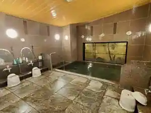
Hotel Route Inn Dai 2 Kameyama Inta
Hotel in Taokatera, Kameyama with parking.
CANDEO HOTELS (カンデオホテルズ)亀山
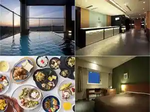
CANDEO HOTELS (Kandeo Hotels) Kameyama
リビングホテル亀山
Ribingu Hotel Kameyama
Hotel in Ono, Kameyama with parking and a sauna.
三重の古民家ゲストハウス 旅人宿 石垣屋
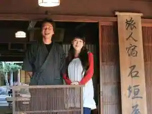
Mie No Ko Minka Guesthouse Tabibito Yado Ishigaki Ya
Guesthouse in Kan, Kameyama with a renovated traditional house.
ゲストホテル関ロッジ
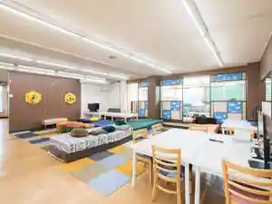
Gesuto Hotel Kan Lodge
バーベキュー鈴鹿峠
Babekyu Suzuka Toge
Dining
鮨いの上
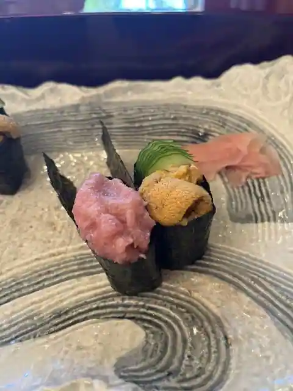
Sushi Ino Ue
うなぎ 初音
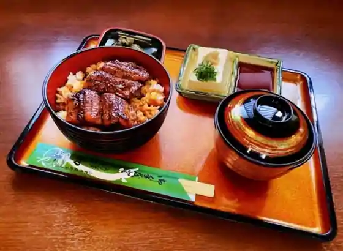
Unagi Hatsune
焼肉 じゅうじゅう 百
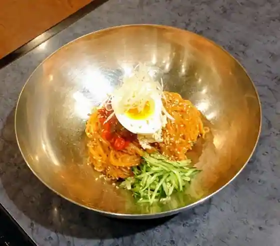
Yakiniku Juju Hyaku
TSUMUGI cafe
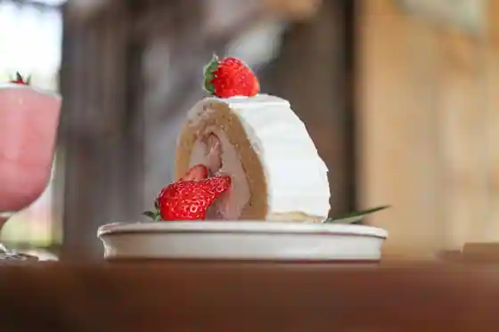
TSUMUGI cafe
亀八食堂
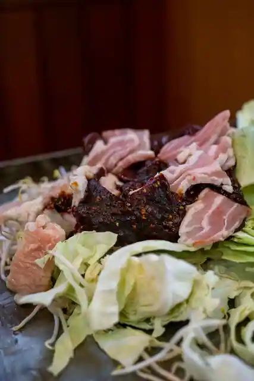
Kamehachi Shokudo
びっくりや
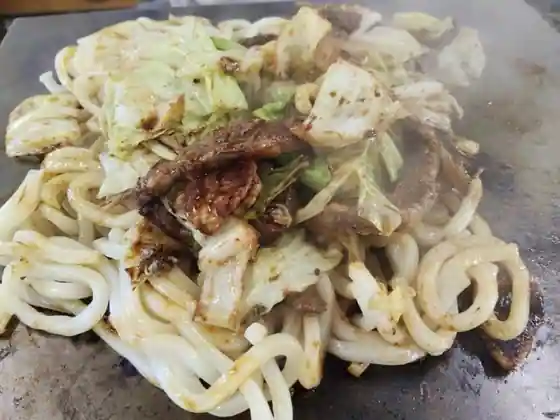
Bikkuriya
川森食堂
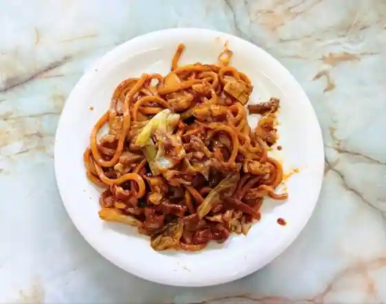
Kawamori Shokudo
中国名菜 しらかわ
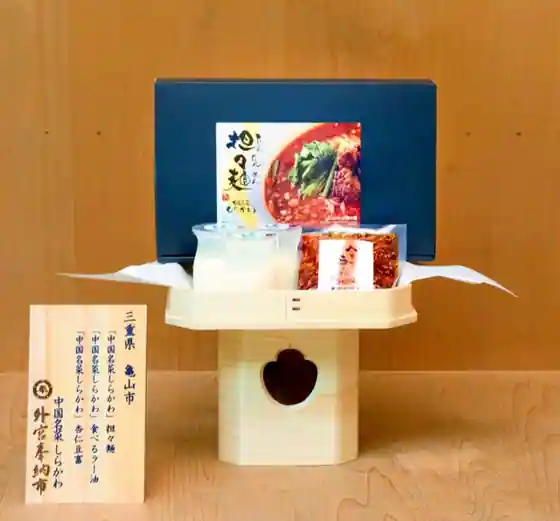
Chugoku Mei Na Shirakawa
かめやま食堂
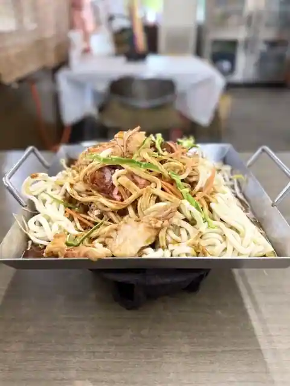
Kameyama Shokudo
コ・ビアン
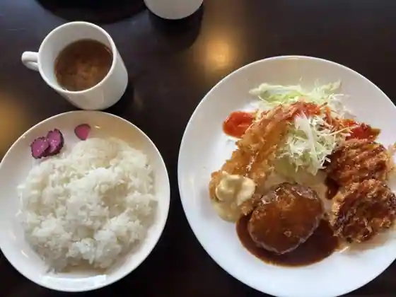
Ko Bian
エジソン休憩所
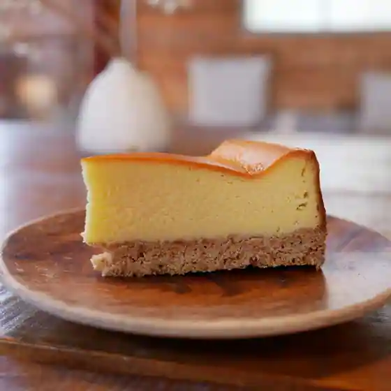
Ejison Kyukeijo
パン焼き小屋 土の香
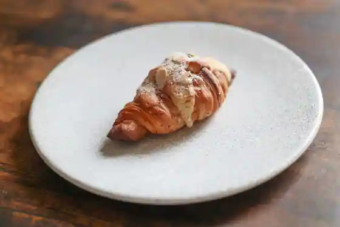
Bakery Yaki Koya Tsuchi No Kaori
志ら玉屋
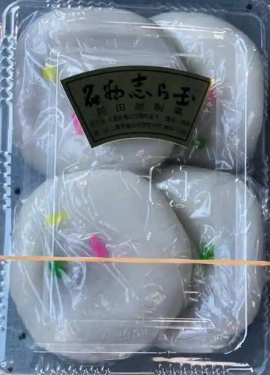
Kokorozashi Ra Tamaya
七色食堂
Nanairo Shokudo
喜久家
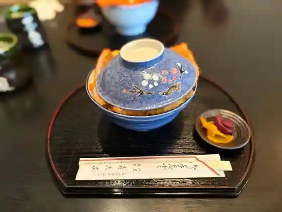
Yoshihisa Ie
実演自家製麺 甚八 井田川店
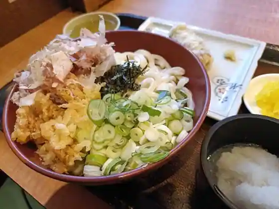
Jitsuen Jikasei Men Jinpachi Ida Kawa
會津屋
Aizuya
Burger & Smile Maker's
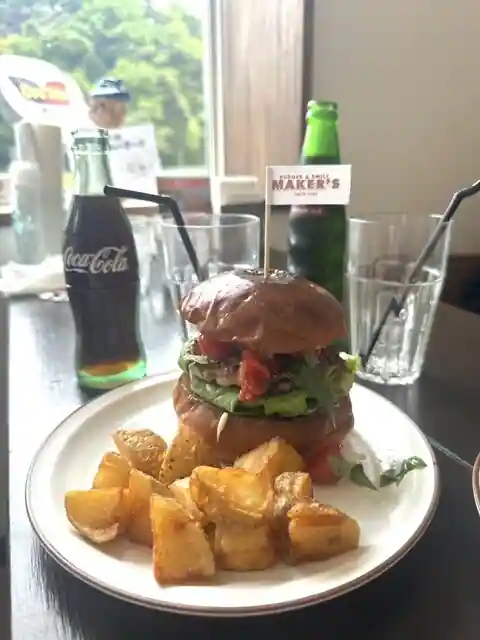
Burger & Smile Maker's
深川屋 陸奥大掾
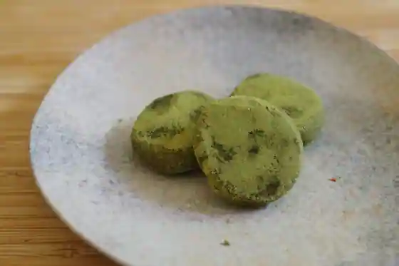
Fukagawa Ya Michinoku Daijo
亀とん食堂
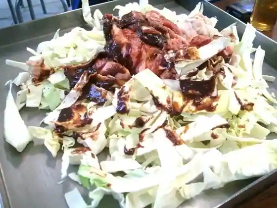
Kame Ton Shokudo
メゾン・ド・ネオ
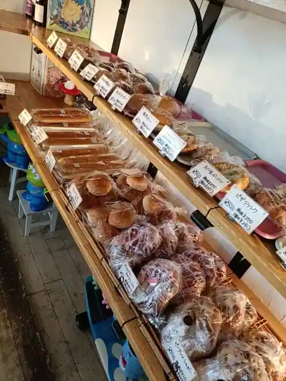
Mezon Do Neo
うえだ食堂
Ueda Shokudo
さくらいろ
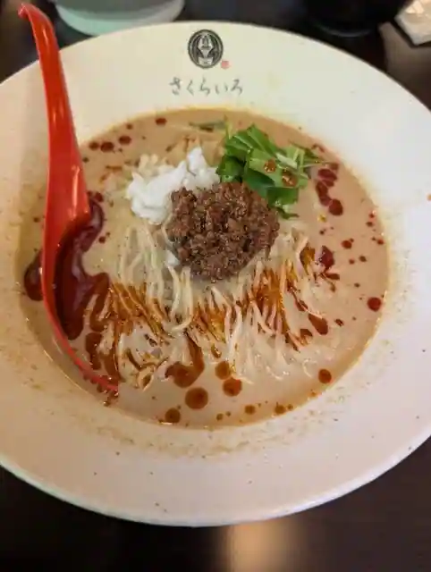
Sakurairo
瑞宝軒
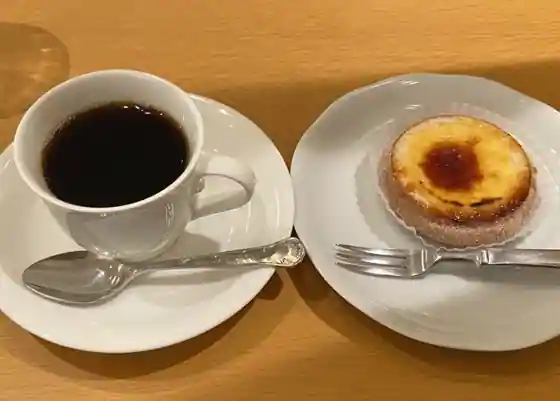
Zuiho Ken
Sights
Nishi no Oiwake

Tokaido Sekiyado

JR Kan Eki Kara Mie Ruhimawari Hatake

Jimoto no Kakure Ta Ikoi no Ba (Anamushi no Sato)

Kameyama Park Shobu Sono
Kameyama History Museum
Yamatotakeru Mikoto Nobono O Haka
Kameyama Sanshain Park
Kameyama Ishi Mizu Kei Campground
Sengagaku
Kameyamarosokutaun
Kameyama Kan Town no Kosumosu
Ta Gan Tera
Sekiyado Hatago Tamaya History Museum
Kameyama Park Kameyama Park Wanpaku Plaza (2024 Nen 3 Gatsu 29 Nichi Rinyuaruopun)
So Suzu Gorufu Club Kan Kosu
Shakujogagaku
Hyaku Roku Sato Niwa Cho Kan Tei
Sho Man Baths (Ashiyu)
Roadside Station Sekiyado
Kameyama Satoyama Park (Michikusa)
Kabuto no Mori Terasu
Kan no Dashi Hall
Kan Machinami Museum
Asahi Yo Yama Makoto Zen Tera
Kameyama Castle Ruins
Higashimeihan Jidoshado (Kameyama Parking Area) Nobori Sen
Higashimeihan Jidoshado (Kameyama Parking Area) Kudari Sen
Kyu Kameyama Shiro Tabun Yagura
Kan Jizo In
Higashi no Oiwake
Kannon Yama Park
Kameyama 7 Za Toreiru
Oke Ju
Sakamoto no Tanada
Shoboji Sanso Ato
no Tozan no Buna Hayashi
Soei Tera no Icho
no Village Ichiri Tsuka
Enmei Terayama Mon (Kyu Kawakita Honjin no Mon)
Kato Kacho Ya Mon Oyobi Dozo (Samuraiyashiki Iko)
Sakashita Yado
Ishii Kyodai Adauchi no Hi
Kawakita Ito Honjin Ato
Suzuka Toge Nature no Ie
Kan Shrine
Suzuka Magota Hall
Haguro Yama
Kada Fudo Taki
no to Tera